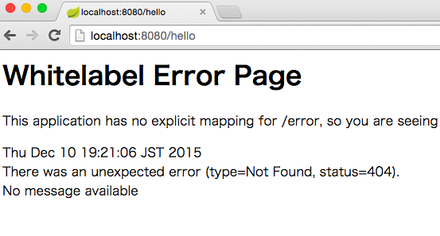

これは、Java EE Advent Calendar 2015 の10日目です。昨日はkodukiさんの「さよならスティッキーセッション！PayaraでJavaEEでもセッションをKVSに。」でした。
また、Mayaa Advent Calendar 2015 の10日目でもあります。昨日は「Mayaaを使ってHTMLを出力するアイデア」でした。
Java EEアドベントカレンダーから来た方に自己紹介しますと、僕は、MayaaというSeasar系のテンプレートエンジンのコミッターの末席を務めさせていただいておるものです。ほぼ一人でMayaaアドベントカレンダーをやっています。興味があれば1日目から読んでいただけると嬉しいです。
さて、サーバーサイドJava界隈では今年ある衝撃がありました。Seasar Conference 2015にて、Seasar2のコミッターひがやすをさんによって、Seasar2のサポートを来年9月26日で打ち切ると発表されました。MayaaもSeasarプロジェクトに属していますが、こちらはこれまでどおりメンテナンスを続けます。
しかし、実際はSeasar2コンテナとMayaaを組み合わせて使うことが多かったのではないかと思います。僕自身は普段はMayaa + 独自開発MVCフレームワークを使っており、Seasar2にもSpringにも正直疎いのではありますが、これからのためにSpringにも慣れておきたいと思います。
なお、Java EEの説明に
内容はJava EEに限らず、Springやアプリケーションサーバなど、サーバサイドJavaに関連することであればなんでもOK
とのことですので、趣旨としても問題ないかと思います。
ある知人のことば
先日、ある知人が
「いやーSpring Bootっての簡単ですねー。こりゃ馬鹿になるわー」
と言っていました。本当でしょうか。この記事を書くのに許された時間は2時間あまりですが、2時間でどれくらいできるのか、見てみようと思います。
Spring tool Suiteをダウンロード
STSっていうEclipseベースのツールを使うのが良いそうです。早速ここからインストールしてみます。
ダウンロードしたアーカイブを展開し、出てきたSTS.appを「アプリケーション」に移動して起動（Macでの話。Windowsの場合は、読み替えてください）
起動すると、Eclipseっぽい画面にSpringのページが表示されています。
{kind=link}
Spring Start Projectを作成
New ProjectからSpring Start Projectを作成します。
へー、ウィザードで、フレームワークとか選べるんですね！しかし、TemplateにMayaaがないですね！
{kind=link}
あとでMavanの設定して追加することにしましょう。
とりあえず、Webだけ選んでFinishを押してプロジェクトを作成します。
何はともあれ、Hello, Worldですかね
Finishを押すと怒涛のライブラリダウンロードが開始されます。今風ですねえ。
で、できたら、***Application.javaを右クリックして、Run As Spring Boot App をクリックすると、勝手に8080ポートでTomcatサーバーが立ち上がります。
（確かにこりゃ馬鹿になるかもｗｗｗ）
. ____ _ __ _ _
/\\ / ___'_ __ _ _(_)_ __ __ _ \ \ \ \
( ( )\___ | '_ | '_| | '_ \/ _` | \ \ \ \
\\/ ___)| |_)| | | | | || (_| | ) ) ) )
' |____| .__|_| |_|_| |_\__, | / / / /
=========|_|==============|___/=/_/_/_/
:: Spring Boot :: (v1.3.0.RELEASE)
（以下色々出てくる。。。）
Controllerを作ります。アノテーション以外POJOなんですねー。クラス作るときSuperクラスにControllerとか探してしまった僕はどんだけ古い時代を生きてるんだ。。。
package com.example;
import org.springframework.web.bind.annotation.RequestMapping;
import org.springframework.web.bind.annotation.RestController;
@RestController
public class HelloController {
@RequestMapping("/")
public String index() {
return "hello, world";
}
}
{kind=link}
簡単ですね。
ここからが大変でした。
Spring Bootがサポートするテンプレートエンジンは Velocity, Thymeleaf, Freemarker, Groovy Templates, Mustacheだそうです。。。
「JSPも使えるけど制限がある」
とのこと....
計画では、MayaaはJSPからの移植性が高いので、まずJSPでやってみて、そこからそのままMayaaへ移行しようしていたですが、どうも、それはやめたほうが良さそう。
とりあえず、pom.xmlを書き換えてmayaaを読み込み
pom.xmlに次を追記
<repositories>
<repository>
<id>maven.seasar.org</id>
<url>http://maven.seasar.org/maven2</url>
</repository>
</repositories>
<dependency>
<groupId>org.seasar.mayaa</groupId>
<artifactId>mayaa</artifactId>
<version>1.1.32</version>
</dependency>
src/main/resources/application.properties
に以下のように記述
spring.view.prefix: /WEB-INF/view/
spring.view.suffix: .xhtml
src/main/webapp/WEB-INF/view/helo.xhtmlを作成
<html xmlns:m="http://mayaa.seasar.org">
<body>
<span m:id="MESSAGE_HERE">dummy message</span>
</body>
</html>
src/main/webapp/WEB-INF/view/helo.mayaaを作成
<?xml version="1.0" encoding="UTF-8"?>
<m:mayaa xmlns:m="http://mayaa.seasar.org">
<m:write m:id="MESSAGE_HERE" value="Hello Mayaa!" />
</m:mayaa>
src/main/webapp/WEB-INF/web.xmlを作成
<?xml version="1.0" encoding="UTF-8"?>
<web-app xmlns="http://java.sun.com/xml/ns/javaee"
xmlns:web="http://java.sun.com/xml/ns/javaee/web-app_3_0.xsd"
xmlns:xsi="http://www.w3.org/2001/XMLSchema-instance"
xsi:schemaLocation="http://java.sun.com/xml/ns/javaee http://java.sun.com/xml/ns/javaee/web-app_3_0.xsd"
id="serv" version="3.0">
<servlet>
<servlet-name>MayaaServlet</servlet-name>
<servlet-class>org.seasar.mayaa.impl.MayaaServlet</servlet-class>
<load-on-startup>1</load-on-startup>
</servlet>
<servlet-mapping>
<servlet-name>MayaaServlet</servlet-name>
<url-pattern>*.xhtml</url-pattern>
</servlet-mapping>
</web-app>
HelloController.javaを書き換え
import org.springframework.stereotype.Controller;
import org.springframework.web.bind.annotation.RequestMapping;
import org.springframework.web.servlet.ModelAndView;
@Controller
public class HelloController {
@RequestMapping("/hello")
public String index(ModelAndView modelAndView) {
return "helo";
}
}
実行！

{kind=link}
ああああ！
できなかった！
ちなみにJSPでやろうとしてもできなかった。
わかったこと
とりあえずわかったこと、Spring Boot使うなら素直にThymeleafを使おう！
なんか悔しいので、機会があったら再チャレンジします！
大変残念ですが、時間切れなので、今日はここまで！
解決編
その後、記事を読んでくれた方からコメントを頂き、そのとおりにしたらできました！Spring BootのテンプレートエンジンにMayaaを使おうとしてみるリベンジ編
コメントいただいた方々、誠にありがとうございました。